An entryway table has one job that sounds simple but somehow gets surprisingly complicated: make a home feel welcoming the second someone walks through the door.
Anyone who is placed a vase, a candle, and a random bowl on the console and thought, "Why does this still look unfinished?" is definitely not alone.
The best styling usually comes from a few intentional pieces rather than filling every inch of the surface.
The trick comes down to balance, height, texture, and a little personality.
So for anyone looking for ways to decorate an entryway table, here is what actually works.
No complicated designer formulas.
No buying twenty decorative objects that eventually get moved to a cupboard.
Just practical ideas that make a foyer look polished and still feel like someone actually lives there.
Nineteen of them are laid out below, starting with the biggest-picture scale decisions and working down to the small finishing touches, so there is a logical place to start no matter what the table actually looks like right now.

How to Style an Entryway Table Without Making It Look Cluttered
Start with fewer pieces than feels right at first.
Seriously.
Put everything intended for the table out, then remove about a third of it.
The entryway will probably look better immediately.
Creating visual layers, instead of spreading small objects evenly across the entire surface, works better too.
A tall lamp on one side, a medium vase or artwork in the middle, and a small bowl or candle toward the opposite side usually creates far more interest.
The wall above the table matters just as much.
A mirror or large piece of artwork can act as the visual anchor, while the table decor supports it.
Mirrors, oversized artwork, greenery, lighting, and a few carefully selected accessories are what build a genuinely strong entryway composition.
Now for the fun part.
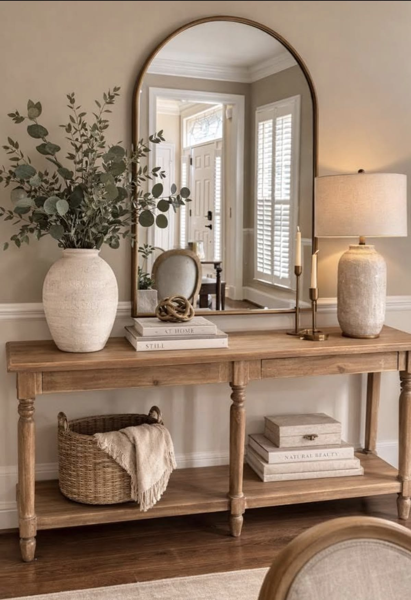
What Should Actually Go on an Entryway Table
The best entryway table decor usually combines something tall, something organic, something personal, and something useful.
A table lamp, vase, mirror, framed artwork, decorative bowl, books, candles, or a small plant all qualify.
Starting with one larger anchor piece and building around it tends to work best.
A lamp or oversized vase creates height, while smaller objects fill the lower visual space without making the table feel crowded.
Thinking about what actually gets needed on the way through the door matters too.
Keys constantly ending up on the kitchen counter is a sign an attractive catchall bowl on the entryway table could give them a permanent home instead.
A decorative entryway table is really a space that combines personality with practical storage for everyday essentials like keys and mail.
The entryway genuinely does provide the first impression of a home, which is exactly why it does more than just hold decorations.
It introduces the style of everything that comes after it.
That is worth remembering before buying a single new object.
The table is not a separate project from the rest of the house, it is the opening line of the same story.
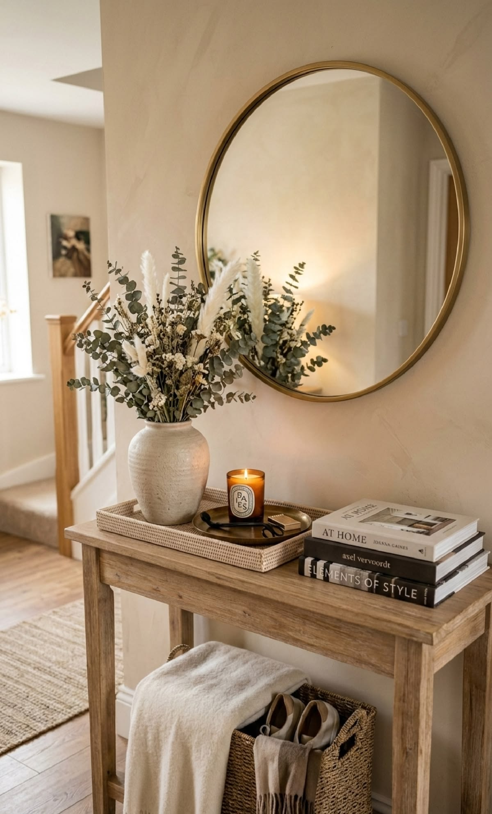
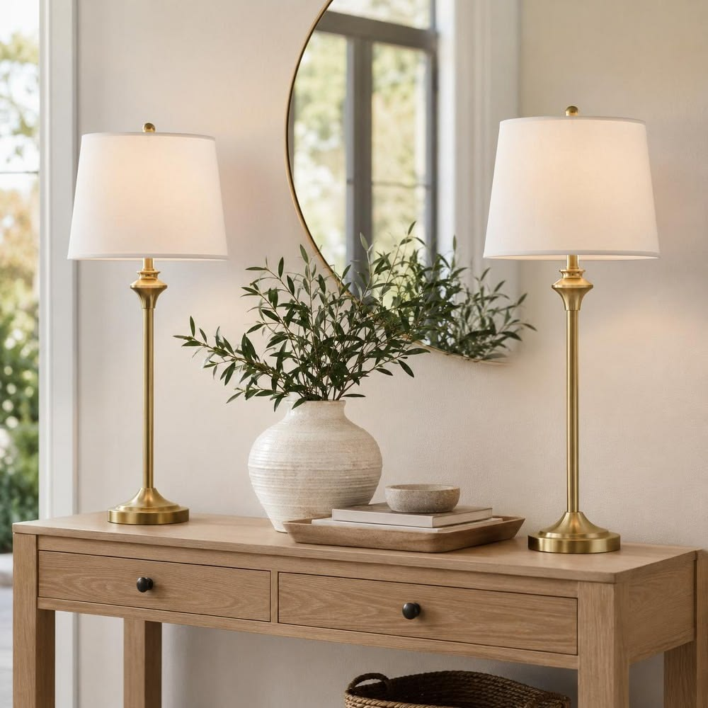
19 Ways to Decorate an Entryway Table
1. Make a Large Entryway Table Feel Balanced
Large foyers create the opposite problem from small ones.
A tiny vase sitting alone on a massive console looks lost.
Increasing the scale of the accessories instead, a large mirror, oversized branches, substantial lamps, larger artwork, or several carefully grouped objects, fixes that fast.
Oversized decor, including large mirrors and planters, genuinely brings balance and sophistication to bigger entrances.
Thinking about the proportions of the entire wall, not just the tabletop, matters here.
A large room needs enough visual weight to feel intentional rather than sparse.
A genuinely oversized piece or two, chosen deliberately, will always do more for a big entryway than a dozen small accents scattered across the same surface.
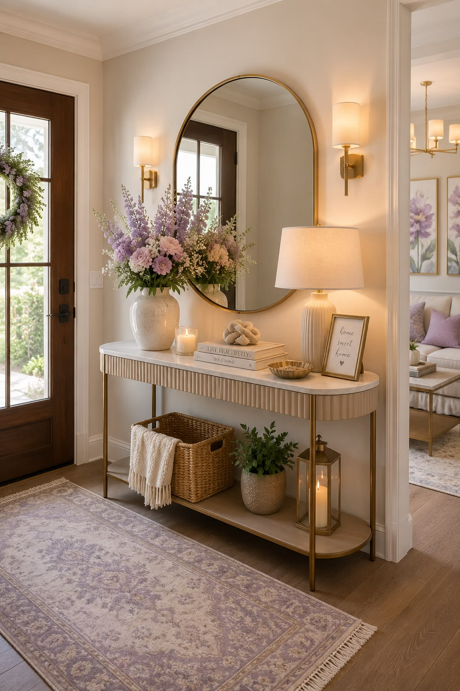
2. Keep a Small Entryway Table Minimal
A tiny foyer is actually an invitation to embrace the empty space.
A narrow console with one lamp, one vase, and one small bowl looks far better than a crowded arrangement.
Slim consoles work particularly well in small entries, since a few carefully selected details create a strong first impression on their own.
The real test: does this object improve the arrangement, or does it just occupy space?
If it only occupies space, it should move.
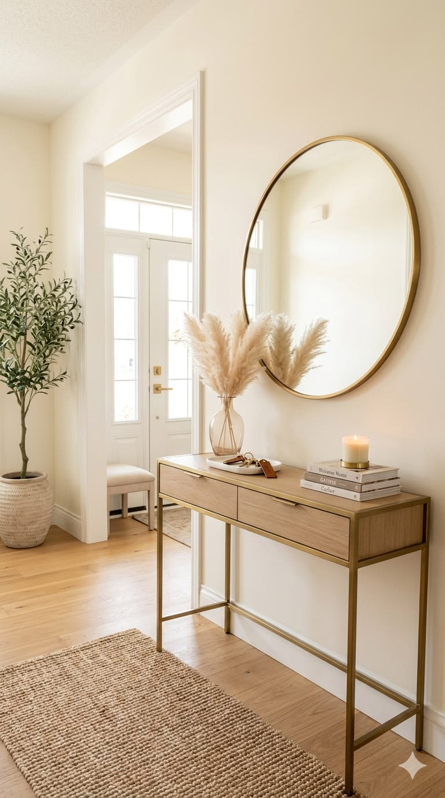
3. Match the Entryway Decor to the Rest of the Home
An entryway should connect visually with the rooms around it.
A living room built around warm woods and creamy neutrals suggests repeating those tones near the front door.
A home with black accents brings a little black into the entryway through a frame, lamp, bowl, or hardware instead.
Copying the neighboring room exactly was never the goal, coordination matters more than matching.
This approach makes the whole home feel connected without every room looking like it came from the same catalog page.
A single repeated material, one wood tone or one metal finish, usually does more of this work than people expect from such a small detail.
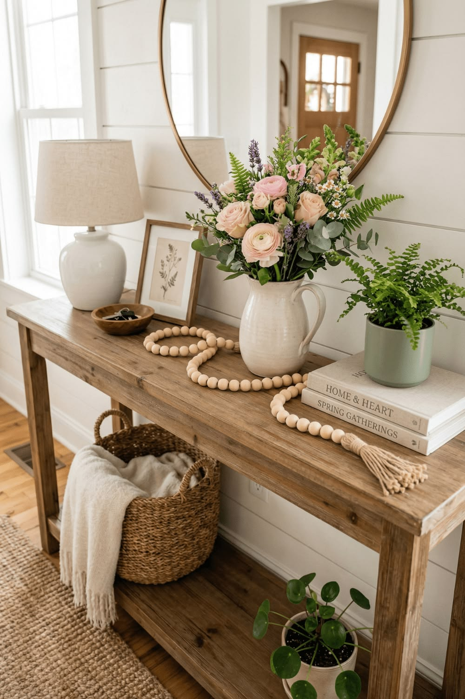
4. Use a Statement Table Instead of Overdecorating
Sometimes the table itself should become the star.
An antique console, a sculptural metal table, a curved wooden piece, or a stone-top design can create enough personality on its own that only a few accessories are needed.
This approach works especially well in smaller entryways, where too many accessories make the area feel cramped fast.
Sculptural silhouettes, oversized decor, and distinctive furniture are exactly the kind of details that give an entrance real character.
A table with an interesting shape deserves room to actually breathe.
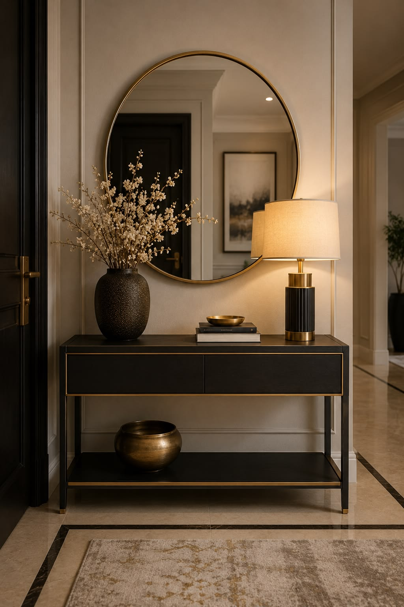
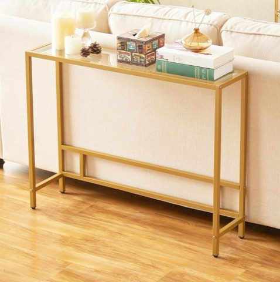
MAJARO Small Modern Console Table, Tempered Glass with Metal Frame, Gold
Shop on Amazon5. Add Storage Under the Entryway Table
The space underneath the console is easy to ignore.
A woven basket can hold shoes, scarves, umbrellas, or other everyday items.
A small bench adds seating while keeping the entryway practical at the same time.
Baskets and benches are genuinely useful ways to fill the space beneath a console while adding real function.
A narrow entryway calls for something that slides completely underneath the table, storage without blocking the walkway.
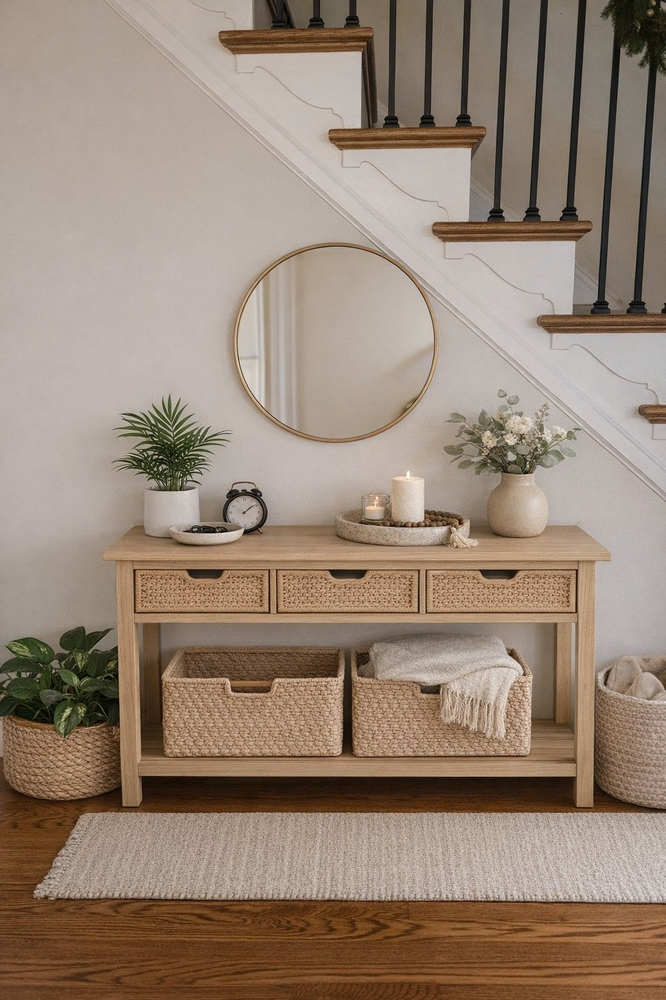

6. Decorate With a Seasonal Accent
Redesigning the entire entryway every season was never actually necessary.
Switching one or two small pieces does the job instead.
Branches and earthy ceramics suit autumn, fresh greenery works for spring, lighter accessories carry summer, and subtle evergreen elements cover winter.
This keeps the entryway feeling fresh without creating unnecessary extra work, and it is a lot easier on the budget than buying completely new decor every few months.
Storing the swapped-out pieces in one labeled bin makes the whole rotation take ten minutes rather than an afternoon the next time the season changes.
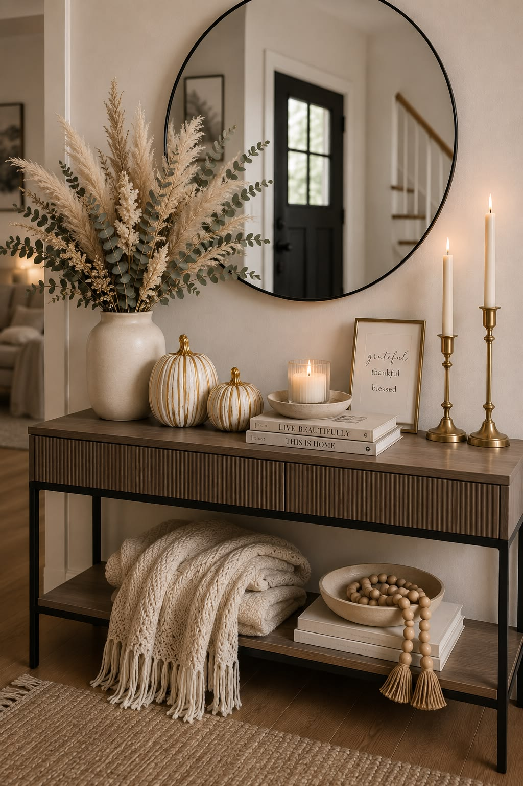
7. Use a Decorative Tray to Organize Small Objects
A tray can instantly make a busy entryway table feel organized.
Keys, a wallet, sunglasses, and other daily essentials all fit inside it.
The tray visually groups those objects together instead of letting them spread across the entire console.
Wood works beautifully with warm interiors, while brass, marble, or glass creates a more elegant look.
A small candle or vase placed on the tray makes even the functional area feel intentional.
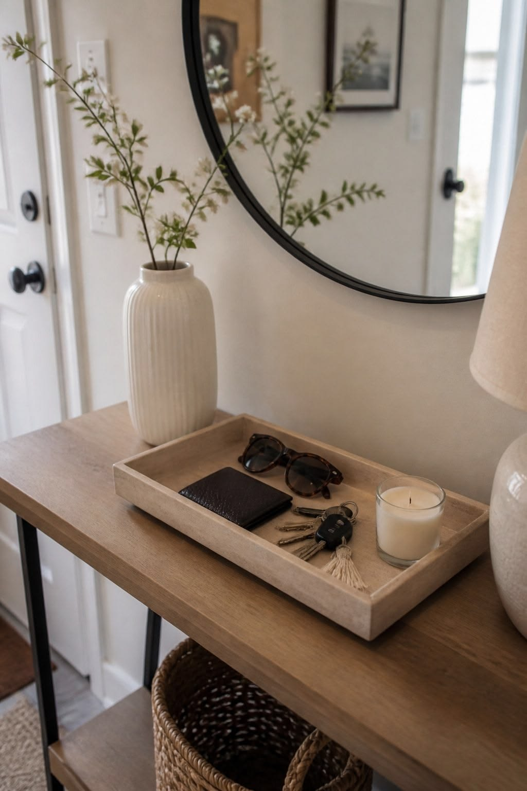
8. Add a Personal Collection
An entryway table should tell people something about who lives there.
A small collection of vintage frames, travel souvenirs, ceramic pieces, family photographs, or objects collected over time does that far better than generic decorative objects ever could, since personal pieces give the space an actual story.
Favorite flea market finds and collected pieces are exactly what give an entryway more personality.
The goal was never a museum display.
A few pieces that actually mean something are plenty.
Rotating a couple of the pieces every so often also keeps the collection feeling alive, rather than becoming one more static arrangement nobody actually looks at anymore.
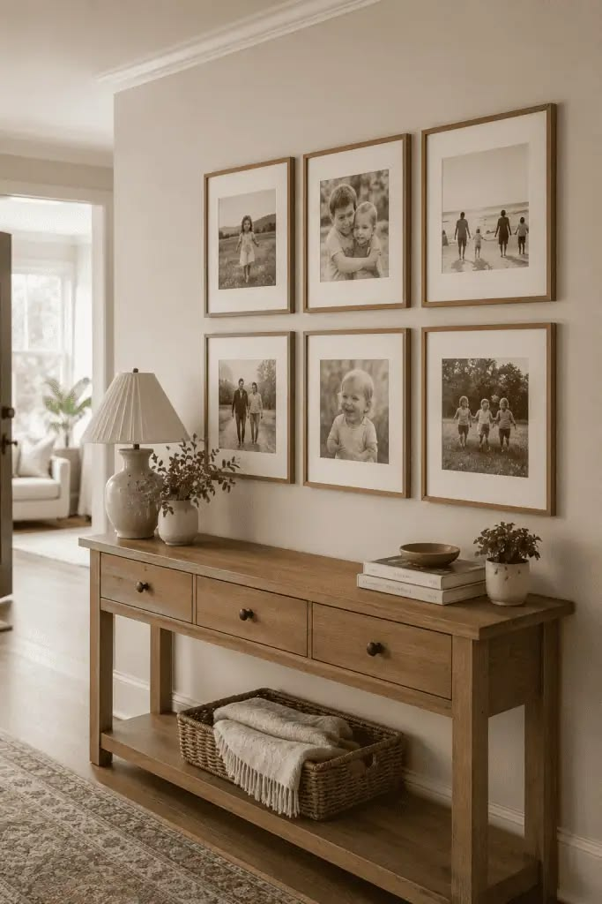

9. Try an Asymmetrical Entryway Table Arrangement
Symmetry looks polished, but asymmetry can feel more collected and personal.
A tall lamp on one side, a medium vase near the center, and a low bowl or stack of books toward the opposite side builds that look.
The trick is balancing visual weight rather than matching objects exactly.
A large dark vase can balance a smaller light-colored object because the darker piece simply carries more visual weight.
That one adjustment makes a surprisingly big difference.
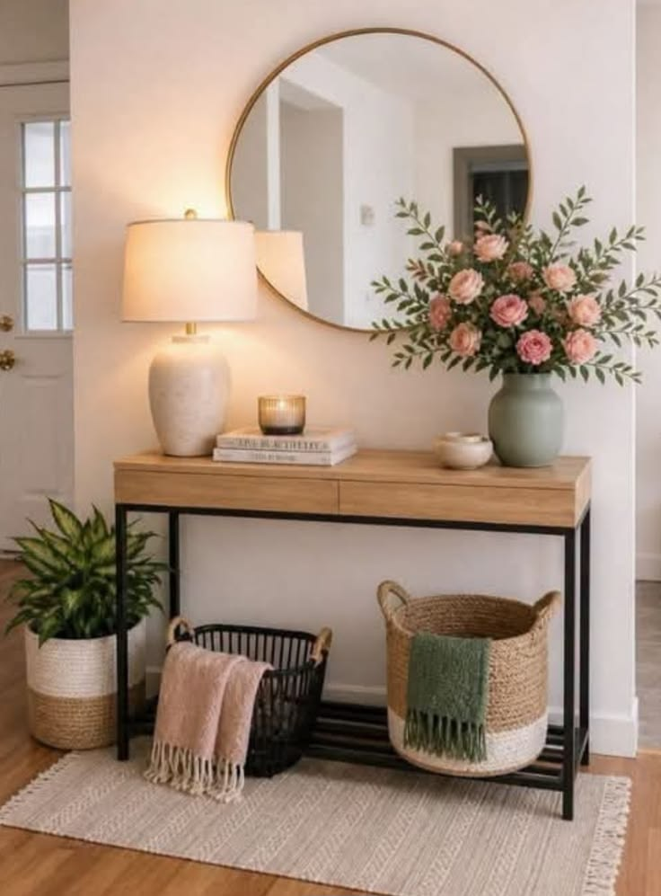
10. Create Symmetry With Matching Lamps
A console table with enough width can handle matching lamps on both ends.
This approach creates instant symmetry and works particularly well in traditional, transitional, and classic interiors.
A mirror or artwork placed between the lamps, with the center kept relatively simple, rounds it out, a small bowl, vase, or stack of books underneath finishes the look.
A more relaxed feel calls for skipping the matching lamps entirely in favor of an asymmetrical arrangement instead.
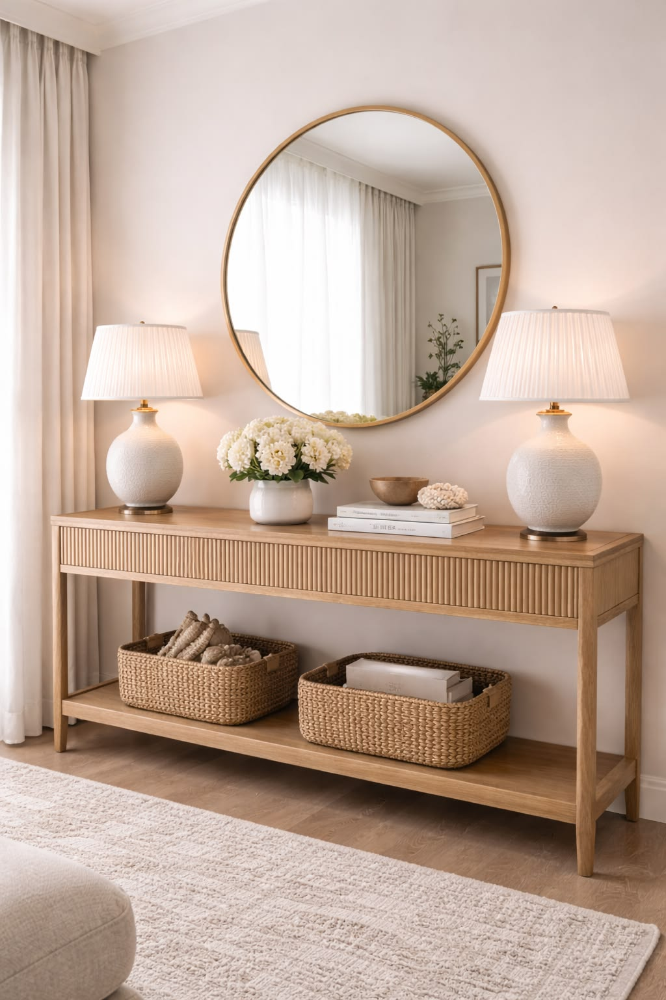
11. Mix Different Textures on the Table
One of the easiest ways to make an entryway table look expensive involves mixing textures rather than buying expensive decorations.
Smooth ceramics paired with rough wood.
Woven baskets beside metal accents.
Glass next to stone.
Soft greenery against structured furniture.
Texture gives the eye something to actually explore.
A table filled with identical glossy accessories can look flat even when every single piece cost a fortune, since combining natural materials with contrasting finishes is what really carries the design.
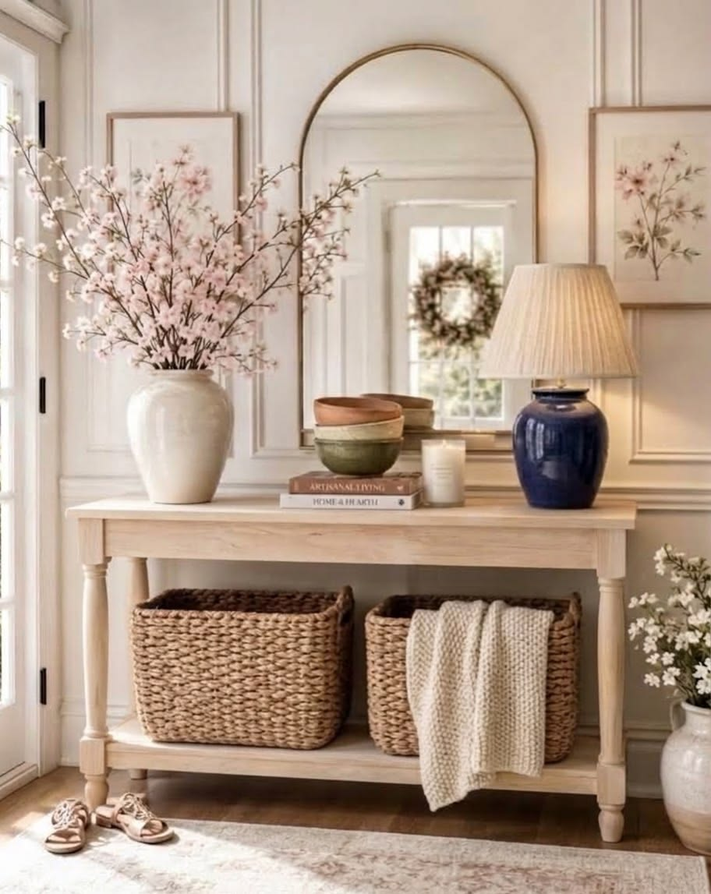
12. Decorate With Candles
Candles add warmth, fragrance, and a little visual interest all at once.
One large candle works as a focal point on its own, or two smaller candles at different heights can be grouped together.
A decorative glass holder adds even more texture to either option.
Scents that feel fresh and welcoming, linen, cedar, vanilla, citrus, soft florals, suit an entryway well.
Keeping the arrangement practical matters too.
A front door sitting close to the console calls for avoiding a candle obstacle course on the way in.
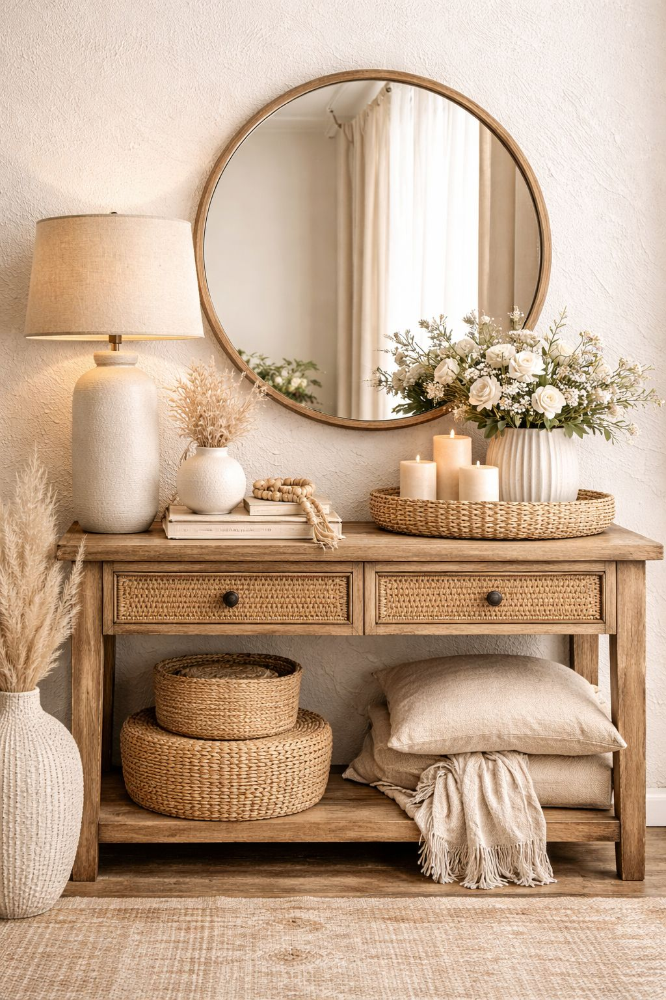
13. Lean Artwork Against the Wall
Every piece of artwork does not need to actually get hung.
Leaning a framed print directly against the wall behind the table, then placing a vase or lamp slightly in front of it, works just as well.
This creates real depth and keeps the arrangement feeling relaxed, with the flexibility to change things up later without a single new nail hole.
Vintage artwork especially benefits from this casual placement, since it keeps the room from feeling too formal.
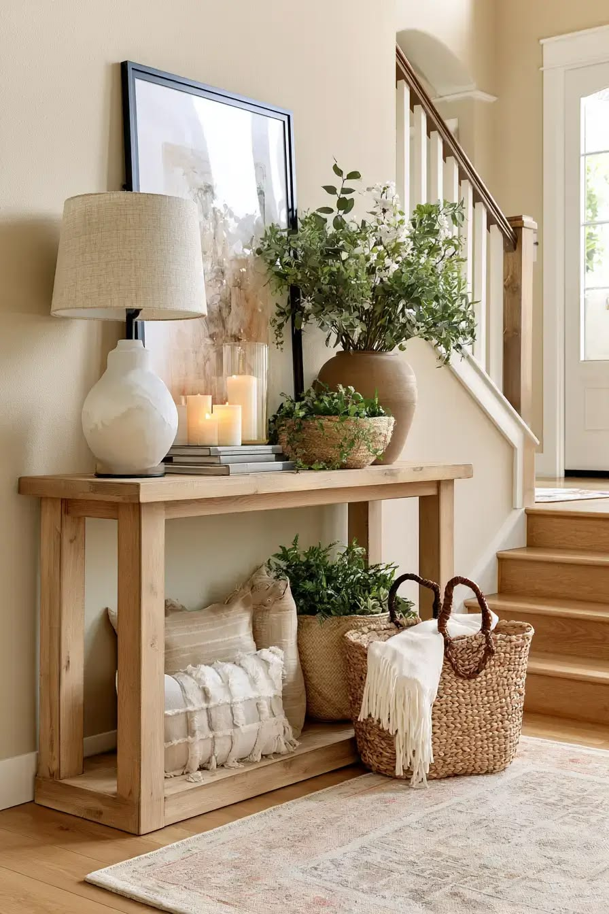
14. Layer Books for an Easy Display
Books add height and personality without making a table look overly decorated.
Stacking two or three coffee table books horizontally, then placing a small vase, candle, or decorative object on top, builds an effortless layered look through the different heights alone.
Neutral covers suit calmer interiors, while colorful ones work beautifully once an entryway already carries stronger accents elsewhere.
Books and collected objects are exactly what help a console table feel like a more personal composition.
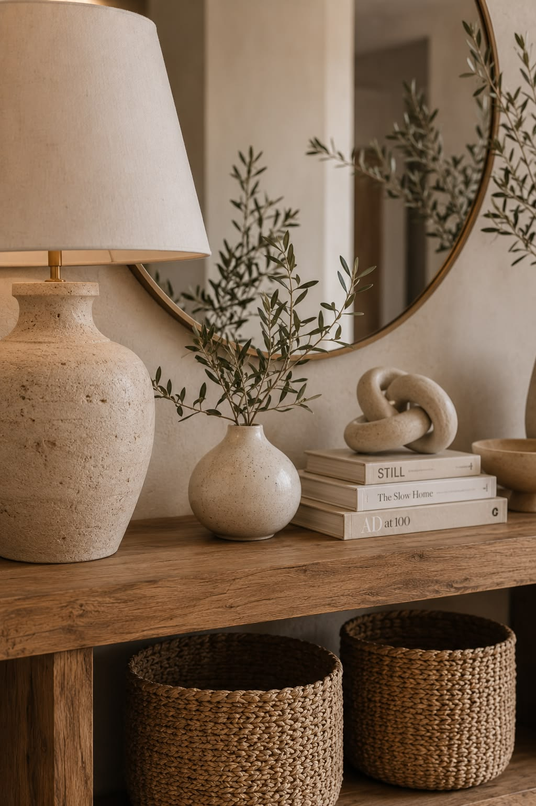
Large Decorative Books for Neutral Home Decor, Set of 3
Shop on Amazon15. Use a Decorative Bowl as a Catchall
This is one of the better entryway table ideas simply because it actually solves a problem.
A decorative bowl near the front edge of the console, used for keys, sunglasses, earbuds, or whatever else usually gets lost, earns its spot fast.
A bowl with interesting texture or shape works best, wood adds warmth, ceramic or stone leans more refined.
The real key is discipline: the bowl should catch essentials, not turn into a graveyard for receipts, coins, and three weeks of unopened mail.
Decorative Bowl Home Decor, Hand Crafted Spanish Oak
Shop on AmazonWooden Bowl for Keys, Walnut Catchall Bowl for Entryway
Shop on Amazon16. Add Greenery for a Natural Look
Plants instantly bring life into an entryway.
A small olive tree, pothos, fern, or leafy plant softens the harder lines of a console table.
Real plants are worth using whenever the entryway actually gets natural light.
Greenery paired with natural wood feels warm without looking overly coordinated.
Good entryway design is really a balance between the old and the new, the collected and the intentional, which is exactly why plants work so well here.
They add something genuinely organic to an otherwise structured arrangement.
5FT Tall Faux Olive Tree with Lush Leaves and Lifelike Fruits
Shop on Amazon6FT Faux Olive Tree with Decorative Planter, Textured Trunk
Shop on Amazon17. Style the Table With a Statement Vase
A large vase can do most of the visual work on its own.
A ceramic, stoneware, glass, wood, or metal vase that complements the colors already in the home, filled with branches, eucalyptus, seasonal stems, or simple greenery, covers it.
An enormous floral arrangement is not actually required.
Loose branches often look more relaxed than anything overly arranged.
A tall vase with long branches suits high ceilings, while a small foyer calls for something shorter so the arrangement does not visually shrink the room.
White Ceramic Vase, Large 12.5 Inch Round Floor Vase
Shop on AmazonCeramic Flower Vase, 12.5 Inch Large Rustic Farmhouse Vase
Shop on Amazon18. Add a Table Lamp for Warm Lighting
An entryway that feels cold or empty at night usually just needs a table lamp.
A warm lamp changes the whole atmosphere.
Lamps with linen, ceramic, wood, or softly textured shades add another layer of material to the space.
Warm entryway lighting matters, and centering a fixture over the table works particularly well.
A wall sconce is a solid alternative when the console has limited surface space, freeing up room for decorative accessories while still giving the entryway a soft glow.
Warm lighting often makes a bigger difference than another decorative object ever could.
JONATHAN Y Felice Floral Ceramic Globe LED Table Lamp, Red/White
Shop on AmazonJONATHAN Y Gretchen 25" Ginger Jar Ceramic LED Table Lamp, Blue/White
Shop on Amazon19. Create a Classic Look With a Large Mirror
A large mirror above the entryway table gives an easy focal point and makes the space feel more intentional.
A round mirror paired with a rectangular console works especially well, since the different shapes create contrast.
The table carries strong horizontal lines while the mirror softens the wall above it.
A mirror also happens to offer one last chance to check in before leaving the house, which alone makes it worth having.
Choosing one that takes up a meaningful portion of the wall, without overwhelming the table, keeps it complementing the console rather than looking like a stray bathroom mirror hung by mistake.
HARRITPURE Round Mirror 30 Inch, Gold Wall Mounted Circle Mirror
Shop on AmazonMadison Park 36 Inch Gold Round Mirror, Metal Frame
Shop on AmazonFinal Thoughts on Decorating an Entryway Table
The best ways to decorate an entryway table never require a huge budget or a house with a grand foyer.
A beautiful entrance comes together with a few thoughtful pieces that combine function, texture, height, and personality.
Start with the largest anchor, a mirror, artwork, lamp, or statement vase, then add smaller pieces like a bowl, books, candles, greenery, or personal objects.
Most importantly, let the entryway reflect the rest of the home.
A beautiful console should not feel like a separate design project.
It should feel like the first little preview of what waits beyond the front door.
And every square inch does not need decorating.
Sometimes the smartest styling decision is leaving a little breathing room.
After all, an entryway table needs to welcome people into a home, not make them wonder whether they accidentally walked into a home decor showroom.